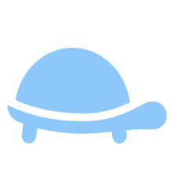
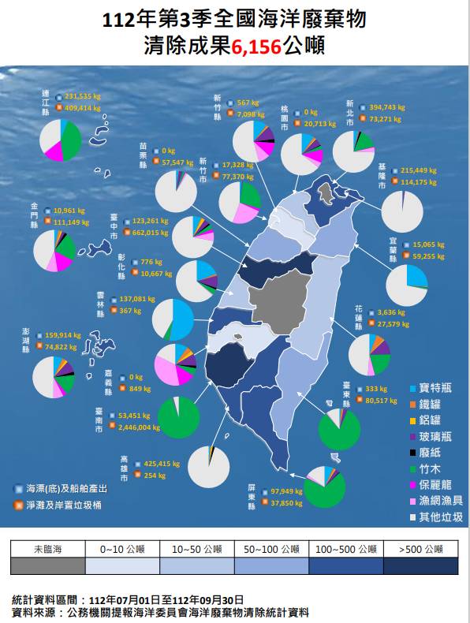

海洋廢棄物（marine debris/marine litter），又稱海洋垃圾或海廢，是指在海洋或海岸環境中被丟棄、扔掉或遺棄的任何持久的、人造或加工過的固體材料。這些廢棄物來自各種來源，包括陸地排放、海洋活動和人類活動。
海洋廢棄物的分布涵蓋全球海域及海岸，對生態及人類造成廣泛影響。海鳥、魚類、海龜及海洋哺乳類常誤食或被纏繞，導致飢餓、溺水、易受天敵威脅，損害海洋食物鏈。大部分海洋垃圾源自日常生活廢棄物，但其嚴重性近年才開始受到重視。從擱淺海龜身上拉出吸管，到海鳥吞下打火機，再到偽虎鯨肚內充斥垃圾，令人憂心。我們對此感到悲傷的同時，也需要理解海洋廢棄物的本質，以及它們如何影響海洋及我們自身。
行政院環境保護署針對淨灘垃圾之分類，通常將海洋廢棄物分為九大類。這包括寶特瓶、鐵罐、鋁罐、玻璃瓶、廢紙、竹木、保麗龍、漁網漁具和其他垃圾。每種類型的廢棄物都有其特定的影響和處理方式。例如，塑料寶特瓶和保麗龍是常見的塑料製品，容易造成海洋生物誤食或纏繞，而漁網漁具可能對海洋生物產生更直接的傷害。紀錄這些廢棄物的重量有助於評估淨灘活動的效果，並制定更有效的海洋保護措施。(資料來源行政院環境保護署)
從九大廢棄物分布圖中，我們可以深切地感受到海洋廢棄物對環境和生態的嚴重影響。圓餅圖及右下角中的顏色，是依據行政院環境保護署的九大海洋廢棄物分類為基礎，展示了各縣市的廢棄物種類。而左下角的顏色代表著產生廢棄物的來源。圖中整合了全台各個臨海的縣市的淨海結果，我們可以清楚地看到各個地區海洋清潔工作的程度。而當地區的顏色越偏深藍色，則代表著該地區的海洋廢棄物清除量越多。

圖片取自:環境資訊中心